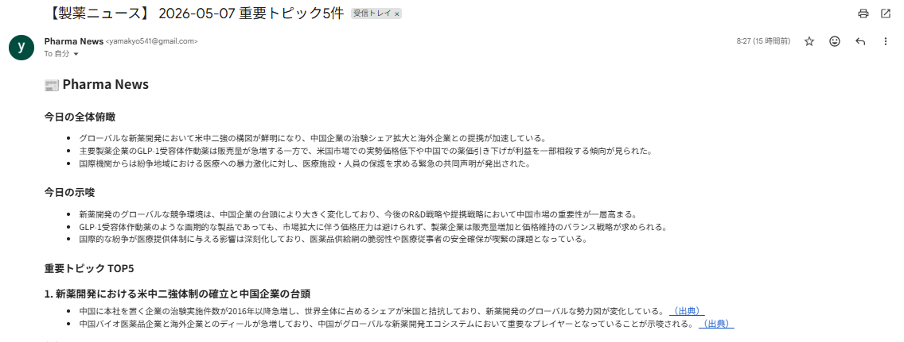

A 4 つのパーツの決め方
このツールは流れが分かりやすいように、 ①ニュースを集める（RSS） ②記事本文を取得する（Jina） ③内容を分析する（Gemini） ④メールで届ける（Gmail） の4つに分けました。 初めて見る人でも「入力→処理→出力」の順で理解できるように、この分け方にしています。
課題提出 · 図解
下記①に実際のツール画面のスクリーンショットを貼り付け、②の各欄を自分の作業内容に合わせて書き換えて提出してください。

ここにスクリーンショットが表示されます
docs/assignment-tool-screenshot.png
をエクスプローラーでこの HTML と同じ
docs
フォルダに保存するか、下の
img の
src
を自分の画像ファイル名に変更してください。
例：ターミナル実行ログ、
tool-characteristics.html
を開いたブラウザ、配信メールの画面 など
このツールは流れが分かりやすいように、 ①ニュースを集める（RSS） ②記事本文を取得する（Jina） ③内容を分析する（Gemini） ④メールで届ける（Gmail） の4つに分けました。 初めて見る人でも「入力→処理→出力」の順で理解できるように、この分け方にしています。
関連する業界記事の中から、重要度の高いTOP5だけを自動で抽出して配信するようにしました。 特に、朝の短い時間で全体を把握できるように、重要記事を優先して読める構成にしています。 また、各トピックに出典を付け、内容を確認しやすく信頼性が伝わるように工夫しました。